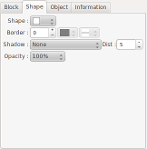
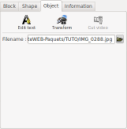

Modify slides Modify slides
Modify slides Modify slides
 |
Add a shot |
Append a shot to end of
the timeline |
 |
Remove shot |
Remove current selected
shot |
| To left |
Change the order of the
shot by moving the current selected shot, of a notch
towards the left |
|
| To right |
Change the order of the shot by moving the current selected shot, of a notch towards the right | |
 |
TV Margin |
Enable or disable rulers
corresponding to the margins of television sets. |
| Shot duration: |
Indicate here the
duration for the current selected shot. For the last shot of the slide, the notion of minimal duration is present. The following rules
apply to calculate the minimal duration of the shot:
|
| Total slide duration: |
The total slide duration
is display here. This duration takes into account possible adjustment of minimal duration of the shot. |
 |
Add title |
Add a new title block |
 |
Add file |
Add a new block of type
image or video. A file selection dialogue box appears
allowing you to select a file (it is not possible to
select several files.) |
|
Remove |
Remove the current block |
 |
Copy |
Copy the current block to
the ffDiaporama clipboard. The copy is made with the parameters of block such as they are defined for the current selected shot. |
 |
Cut |
Copy the current block to
the ffDiaporama clipboard and remove it from the slide The copy is made with the parameters of block such as they are defined for the current selected shot. |
 |
Paste |
Paste block from the
ffDiaporama clipboard and insert it. |
| Up |
Change the order of
blocks by moving the active block upward (towards the
background) |
|
| Down |
Change the order of blocks by moving the active block downward (towards the foreground) |
 =Title,
=Title,
 =Image,
=Image,  =Video)
=Video) icon appears for
the block which has the sound
icon appears for
the block which has the sound |
 |
Click
this button to make visible or hidden the active block.
Note: Hidden video blocks are automatically put in pause |
|
|
This button is active only for videos. Click this button to give the sound, during this shot, to the current video block | ||
 |
Represent
the horizontal position of the block from the left. This position is defined in percentage (%) of the total width of the image or using pixel (for a 1080p screen) according to the unit defined in the configuration dialog box. |
||
 |
Represent
the vertical position of the block from the top. This position is defined in percentage (%) of the total height of the image or using pixel (for a 1080p screen) according to the unit defined in the configuration dialog box. |
||
 |
Represent
the with of the block. This value is defined in percentage (%) of the total width of the image or using pixel (for a 1080p screen) according to the unit defined in the configuration dialog box. |
||
 |
Represent
the height of the block. This value is defined in percentage (%) of the total height of the image or using pixel (for a 1080p screen) according to the unit defined in the configuration dialog box. |
||
 |
Rotation
according to the Z axis defined in degree. |
||
 |
Rotation according to the Y axis defined in degree. | ||
 |
Rotation according to the X axis defined in degree. | ||
| Shape |
Allows
to select a shape for the block. The selected shape will
be use as:
|
||
| Border |
Thickness
of the border |
Defined the thickness of the border (This value is defined as 1/1080 of the height of the screen. A value of 10 corresponds to 10 points on a FullHD screen 1920x1080, but only to 6 points on a screen 1280x720). | |
| Border
color |
Defined the color of the line to be used to draw the border | ||
| Line type
of border |
Defined the type of line (solid, dotted line, etc.) | ||
| Shadow |
Shadow
position |
Defined in which corner
the shadow will be positioned (Note: the position of the
shadow is independent from rotations of the block: the
right lower corner is always the right lower corner
about is the rotations applied to the block) |
|
| Distance of the shadow | Defined the distance
between the block and its shadow |
||
| Opacity |
Opacity |
Defined the opaqueness of
the block. This value also applies to the text of the
block. |
|
|  |  |
Click this button to call
the Define the properties of a
text block dialog box. |
|||||||||||
 |
Click this button to call
the Framing and correction of
image or movie dialog box |
||||||||||||
 |
Click this button to call
the Cut a video dialog box This button is active only for objects containing images or videos. |
||||||||||||
According
to the type of object, various contents are possible:
The name of the file.
The

Geometry: allows to
select the geometrical constraint to be applied to the
block. Three type of constraint are available:
The following filters are available:
|
|||||||||||||
|  | Display information on
the block:
|
 WIKIPEDIA |
Description
of TV margins and overscan Description of EXIF - Exchangeable image file format |